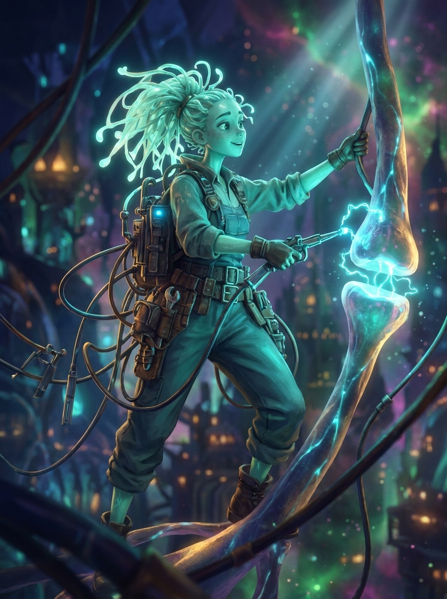
Astri
A astrócito engenheira. Nutre, repara e decide o que a cidade reforça ou deixa cair.
Dossiê confidencial para parceiro criativo e comercial
Uma série animada sobre um garoto de 12 anos tentando pertencer à escola nova sem perder a parte de si que o trouxe até ali.
O que existe hoje
Esta apresentação foi pensada para alguém que possa avaliar o projeto com olhos criativos, comerciais e jurídicos. Ela resume a bíblia, a T1, os roteiros, a ciência, a arte, o plano de negócios e o mapa de documentos. Os links no final abrem as fontes integrais.
Bíblia final integrada, mundo e regras, personagens, motor da temporada, dossiês profundos, roteiro do piloto, roteiro do Ep. 2 e beat sheets dos Eps. 2 a 10.
No centro da série está Léo Macedo, 12 anos: um construtor de mundos - mapas, criaturas, cidades impossíveis num caderno criado com Pedro - tentando caber na escola nova sem trair o próprio talento.
Pitch deck em texto, sizzle de 90 segundos, cenas de audição, guia do pacote, encarte PDF/DOCX, plano de negócios e estratégia de proteção da IP.
O alvo é uma produtora brasileira independente de animação ou infantil/tween, com rota para desenvolvimento, fomento, canal e distribuição.
A promessa
Córtex City é sobre as estradas que você constrói - e as que deixa cair quando tenta caber.
Dentro da cabeça de Léo, toda estrada usada fica mais forte - e toda estrada abandonada vai para demolição. Quando ele esconde o caderno de mundos e deixa Pedro no vácuo para caber na escola nova, a cidade marca com tinta vermelha o caminho dos mundos que só os dois sabiam criar. Para salvá-lo antes da grande apresentação da turma, Léo vai ter que mostrar justamente o que passou a ter vergonha de ser.
A série não dramatiza emoções abstratas nem faz uma excursão pelo corpo humano. Ela dramatiza neuroplasticidade: uso, desuso, poda, mielina, sono, recompensa, foco, memória e responsabilidade - sempre como física do mundo, nunca na primeira camada de venda.
O loop de retorno é a regra do artefato: a cada episódio, uma parte visível do mundo de Léo - uma página do caderno, uma criatura, uma melodia, um apelido - some ou volta, conforme ele usa ou abandona.
Na cabeça do Léo existe uma cidade inteira. Tudo o que ele usa todo dia fica mais forte. Tudo o que ele deixa de lado começa a rachar. Agora apareceu tinta vermelha numa estrada: DEMOLIÇÃO À VISTA. É o caminho do caderno de mapas, criaturas e mundos que ele inventava com Pedro, o melhor amigo. Se Léo não voltar a desenhar, uma parte do mundo dele desaparece.
Se tanto do que eu faço é automático - disparado por células, hormônios e hábitos que eu não escolhi - o que ainda é responsabilidade minha?
A resposta da temporada não é “você controla tudo” nem “você não controla nada”. É a frase que organiza a obra: você não escolhe o primeiro impulso, mas é o engenheiro do próximo.
O mundo
Córtex City é uma metrópole viva dentro do cérebro de Léo. Cada distrito ocupa uma função real. Cada rua muda quando Léo usa ou abandona uma parte de si. A ciência sustenta a física do mundo, mas a tela mostra aventura, humor, custo e escolha.
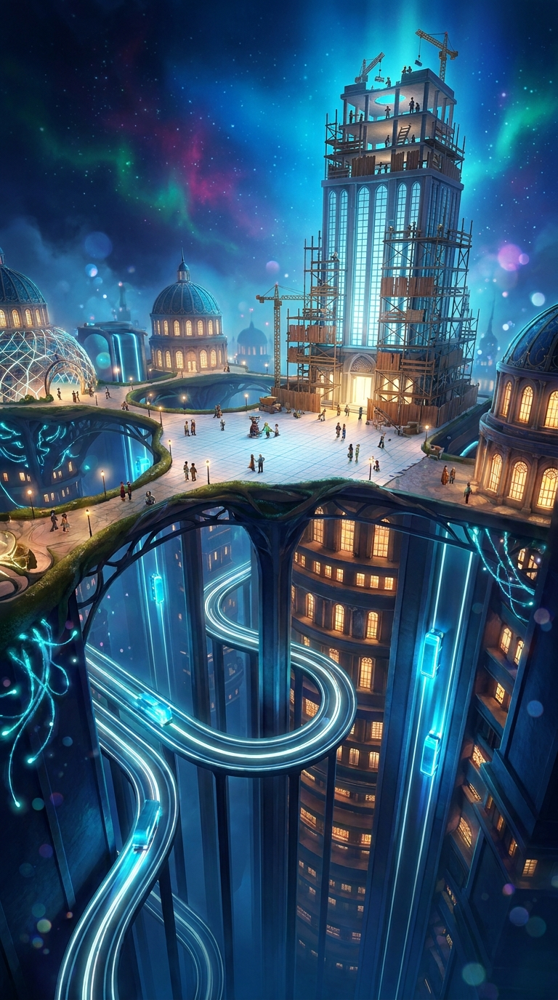
A prefeitura das funções executivas, ainda em andaimes. Não falta “força de vontade”; falta obra pronta.
A segurança que chega em milissegundos. Amy ama Léo; seu defeito é o excesso de zelo.
Mapas vivos de memória, bondes noturnos e a estrada antiga que carrega Pedro, música, traço e voz de casa.
O neon da recompensa. Dopa acende o “quase lá” e some no instante da vitória.
Temporada 1
A T1 é serializada em dez episódios. Por fora, Léo tenta pertencer ao Santa Clara. Por dentro, a cidade marca para poda a estrada velha dos mapas que ele fazia com Pedro. Cada episódio resolve um conflito da semana, mas empurra a mesma perda silenciosa.
Léo chega ao Santa Clara e trava quando precisa se apresentar. Por fora, é o primeiro constrangimento da escola nova; por dentro, Amy toma as avenidas, Broca engasga, Wernicke improvisa e a Metrópole Frontal ainda não consegue organizar a fala. Aqui aparece a regra de ouro da série: Córtex City não salva Léo sozinha; ela amplifica um gesto real dele. A pequena vitória não é virar confiante; é pedir água, sair andando e deixar aberta a frase que a temporada inteira vai completar: “eu sou o Léo, vim do Méier”.
Depois do blecaute, Solange tenta ajudar com uma atividade de “quem sou eu”, mas o exercício vira pressão para Léo montar uma versão lisa, aceitável e sem Méier. Dentro da cidade, vários módulos tentam defini-lo por pedaços: rosto, fala, risco, performance. Identidade deixa de ser discurso e vira cena: a vontade de editar a própria biografia para caber fica visível. Davi percebe um traço antigo no caderno; Pedro manda um áudio com um apelido que só os dois entendem; Léo quase responde e recua. É também aqui que a escola anuncia a grande apresentação da turma - o relógio público da temporada começa a correr.
A roda de música do fim do semestre entra no horizonte, e Léo quer tocar violão bem o bastante para ser visto pela turma e talvez pelo pai. A cidade mostra a prática como estrada real: no começo é lama, tropeço e frustração; depois, repetição sem plateia começa a virar asfalto. “Talento” dá lugar a construção: errar sozinho também é obra. Enquanto Léo inaugura a estrada nova do violão, os Coveiros marcam a estrada velha dos mapas com Pedro, e a temporada ganha seu primeiro prazo visível.
Léo descobre que reler matéria não é o mesmo que lembrar, e a Sra. Hipo transforma estudo em mapas vivos: uma pergunta acende uma rua, um desenho abre uma travessa, um caminho repetido firma o trilho. Aquilo que ele escondia para não parecer “de fora” vira ferramenta para aprender. Não é nostalgia; é função dramática. O jeito antigo de desenhar ainda salva Léo, mas ele continua sem honrar Pedro, e a estrada velha recebe mais silêncio.
Léo vira a noite preso na tela, no jogo e no “só mais um”, e paga a conta no dia seguinte. Dentro da cidade, o bonde noturno não sai, a Sra. Hipo não consolida rotas, e restos do dia entopem os corredores. O sono vira aventura visual sem moralismo: não é “largue o celular porque faz mal”, é “sem noite, a cidade não consegue terminar a obra”. O golpe emocional vem quando Léo mente para Pedro pela primeira vez, dizendo “depois te ligo”, e a prova perdida continua perdida.
A Praça Accumbens vira uma máquina brilhante que promete fechar a conta no próximo clique, na próxima figurinha, na próxima partida. Dopa não entrega felicidade; entrega quase, e o quase ocupa o tempo de manutenção da cidade. A diferença entre querer e gostar aparece sem palestra e sem nome técnico. O custo não é uma tragédia grande: Davi espera, Pedro fica para depois, a estrada velha pega poeira nova, e Léo percebe tarde que o “mais um” cobrou um pedaço real do dia.
Léo tenta garantir lugar no grupo do Murilo e ri da humilhação de Theo no momento em que deveria ter escolhido melhor. Otto mostra o lado ambíguo do pertencimento: o mesmo abraço que aquece o “nós” também pode erguer uma muralha contra alguém. A reparação não vem por uma fala bonita; vem quando Léo senta com Theo, divide espaço e aceita perder status. Por dentro, o pacto entre Amy e o Prefeito falha pela primeira vez, a Névoa sobe no meio dos prédios e o público entende que pertencer ao grupo errado tem custo urbano.
Beto manda um áudio carinhoso, imperfeito, dizendo que talvez consiga ir à roda. Isso acende um palco antes da hora dentro de Córtex City: expectativa, medo de decepcionar, vontade de tocar uma música que o pai aprove. O pai não precisa ser vilão para machucar; basta ser intermitente, quente o suficiente para Léo esperar e incerto o suficiente para deixar buraco. A música própria de Léo quase vira cópia para agradar Beto, e a melodia do Méier aparece pequena, resistindo dentro do arranjo.
Depois da reparação pública, vem a parte menos cinematográfica e mais difícil: continuar reparando quando ninguém está olhando. Theo aceita dividir uma mesa de trabalho com Léo, mas não vira amigo por decreto; a ponte precisa de manutenção, não de confete. Desculpa não compra absolvição; compra uma próxima chance de agir direito. Enquanto Léo dá crédito aos mapas de Theo e usa o próprio traço sem esconder, Pedro emudece pela primeira vez, e o silêncio dói mais do que uma cobrança.
A roda de música cai no mesmo sábado do aniversário de Pedro, e Léo não consegue estar nos dois lugares. O finale junta tudo: a estrada do violão construída no Ep. 3, o sono que custou no Ep. 5, a reparação com Theo, o pacto enfim aceito entre Amy e Prefeito, e a estrada velha quase podada sob Névoa no topo. A vitória não vem limpa: Beto falta, Theo não perdoa inteiro, a panelinha não coroa Léo e a estrada de Pedro sobrevive fina, não restaurada. Mesmo assim, Léo toca a própria música com medo, grava para Pedro e prova a tese da série: ele não escolheu o primeiro impulso, mas escolheu qual estrada manter viva.
Elenco
Os moradores internos não são professores de biologia. Eles querem, erram, fazem piada e carregam uma função real do cérebro. A regra é simples: nenhuma estrutura biológica vira vilã moral.

A astrócito engenheira. Nutre, repara e decide o que a cidade reforça ou deixa cair.
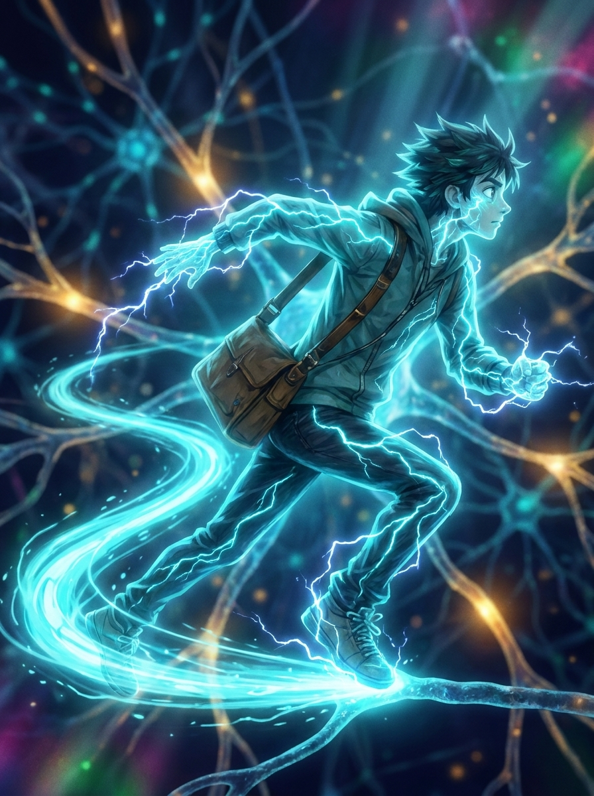
O potencial de ação veloz demais. Acha que escolhe, mas descobre que entrega.
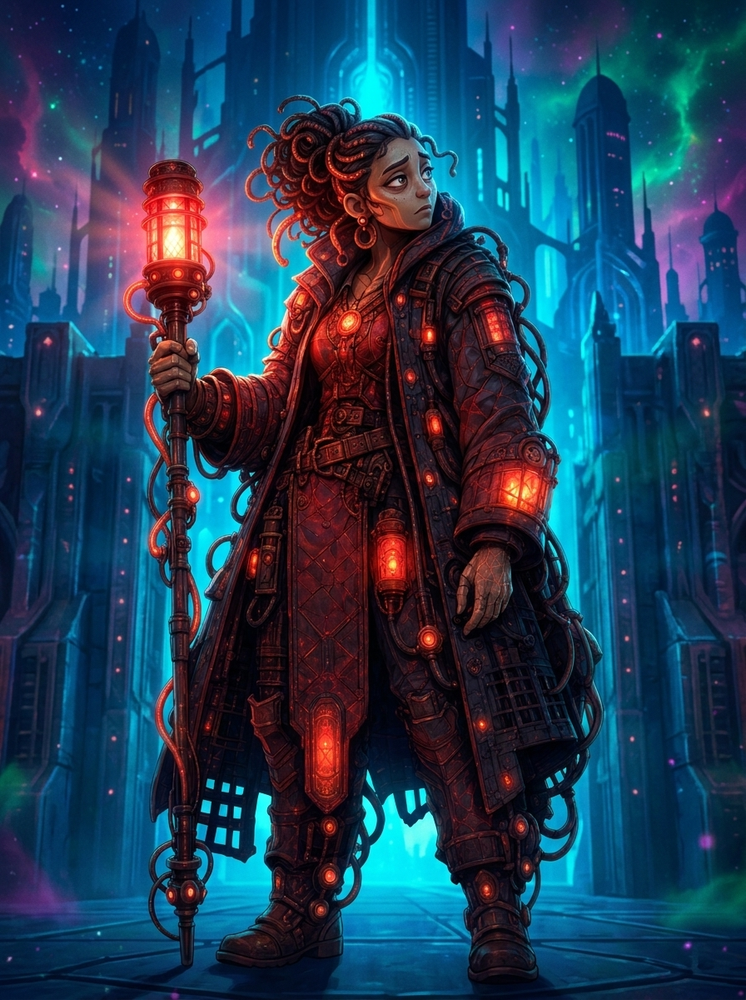
A comandante da Amígdala. Não é vilã: é a guardiã que chega antes de todo mundo.
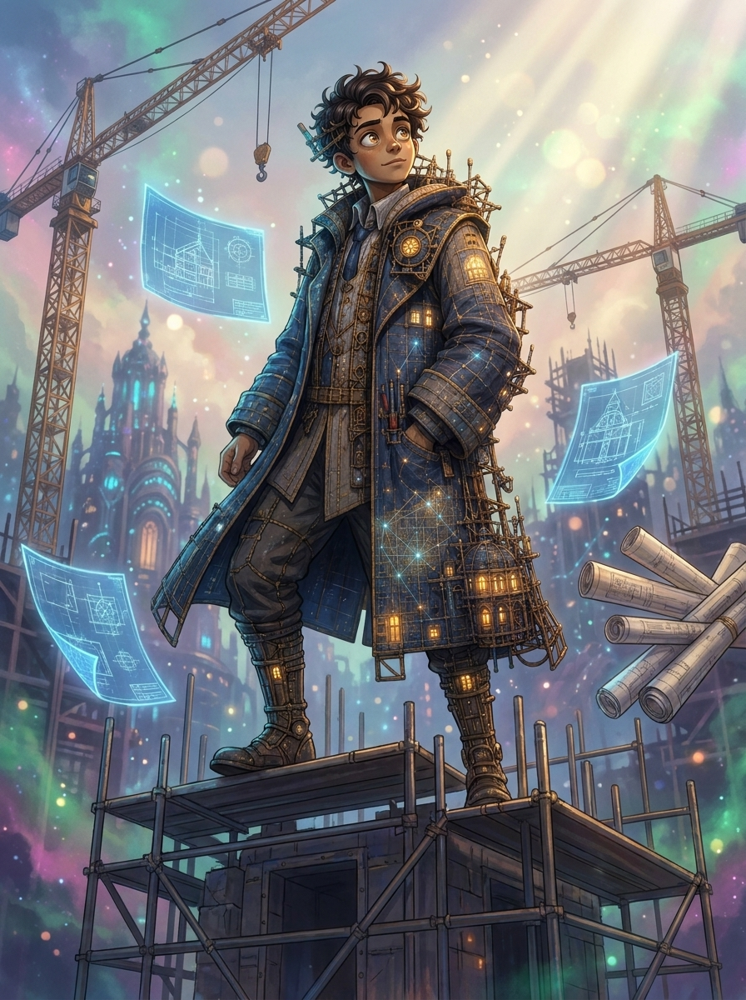
Jovem, competente e atrasado pela própria obra. A autoridade ainda está em construção.
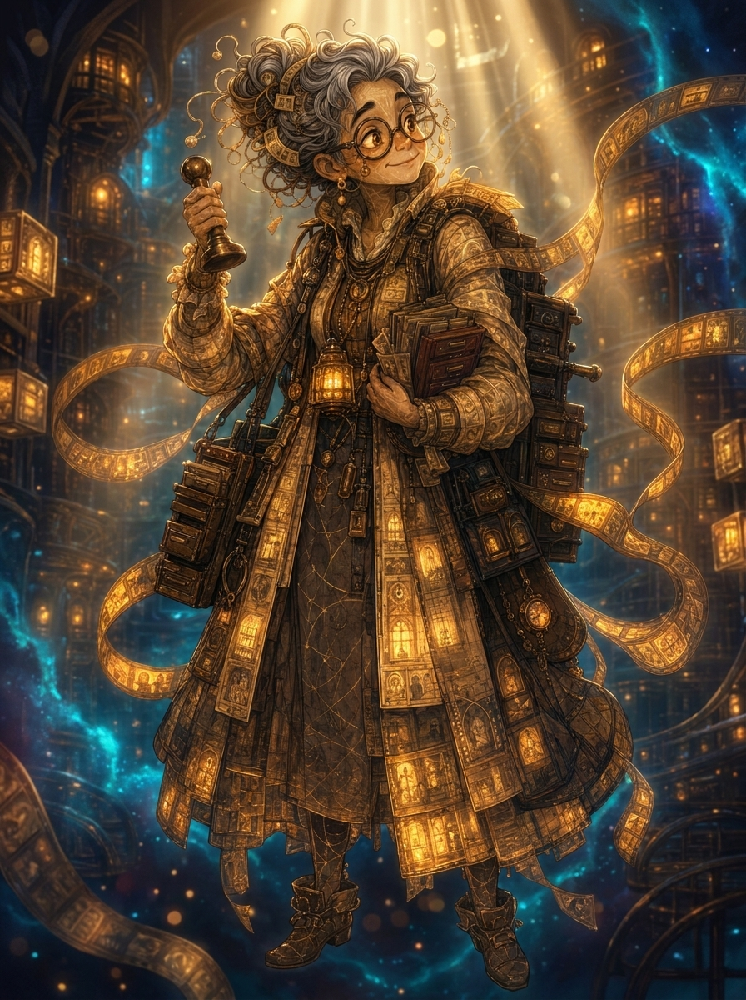
A bibliotecária de mapas vivos e guia dos bondes noturnos da memória.
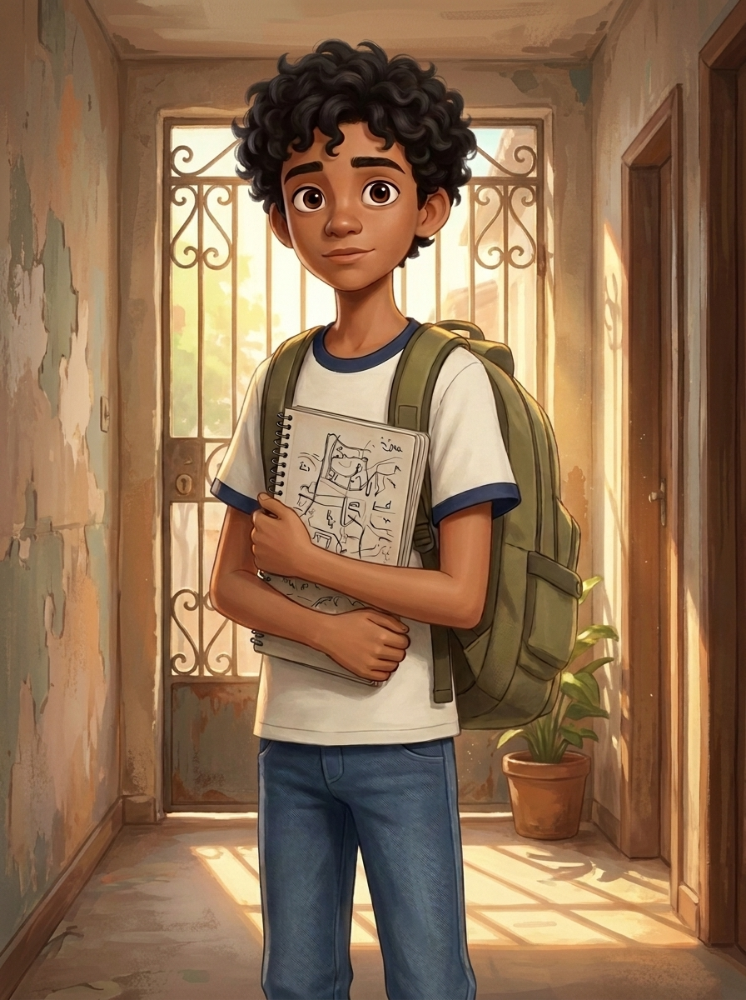
O garoto de fora. Córtex City só importa porque Léo importa.
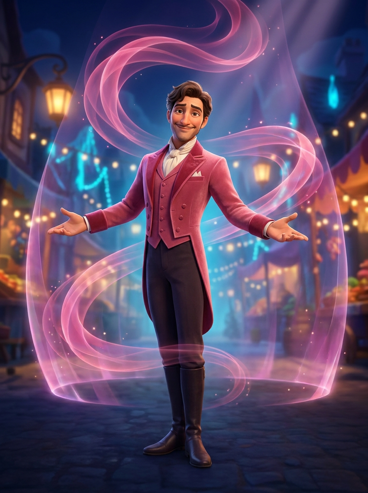
O encantador da ocitocina: aquece o “nós” e pode gelar quem fica de fora.
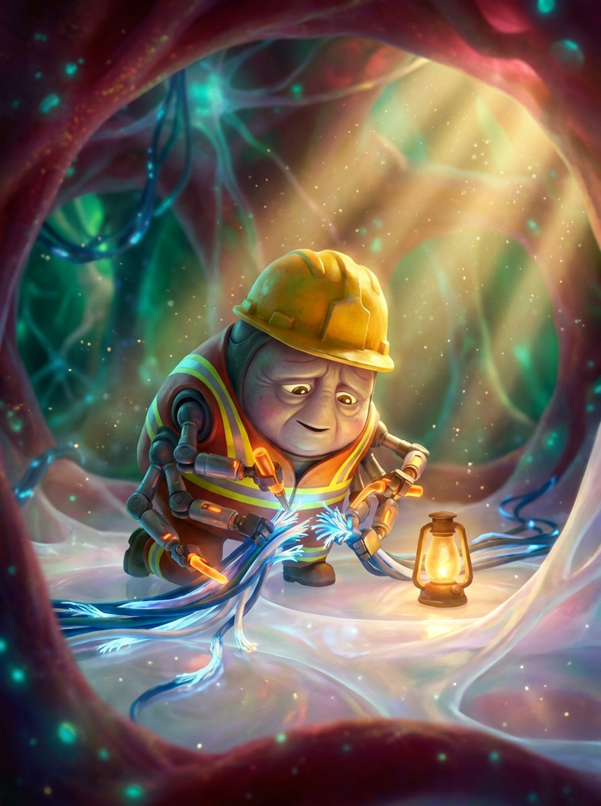
O capataz da micróglia. Poda com etiqueta. Sob Névoa, perde o critério.
Tom
A criança ri do corpo, do tropeço, da burocracia. O adulto percebe que a gag era o mecanismo científico funcionando por baixo.
O pai falta, Theo não perdoa inteiro, a estrada sobrevive fina. O final é honesto porque não limpa a conta.
Nenhum personagem explica neurociência para a câmera. O mundo mostra estrada, luz, névoa, portão, tráfego e custo.
Concept art recente
As imagens abaixo não tentam vender arte final; elas mostram o território visual da série: o Rio cotidiano por fora e a cidade neural por dentro, com personagem 2D autoral e profundidade cinematográfica.
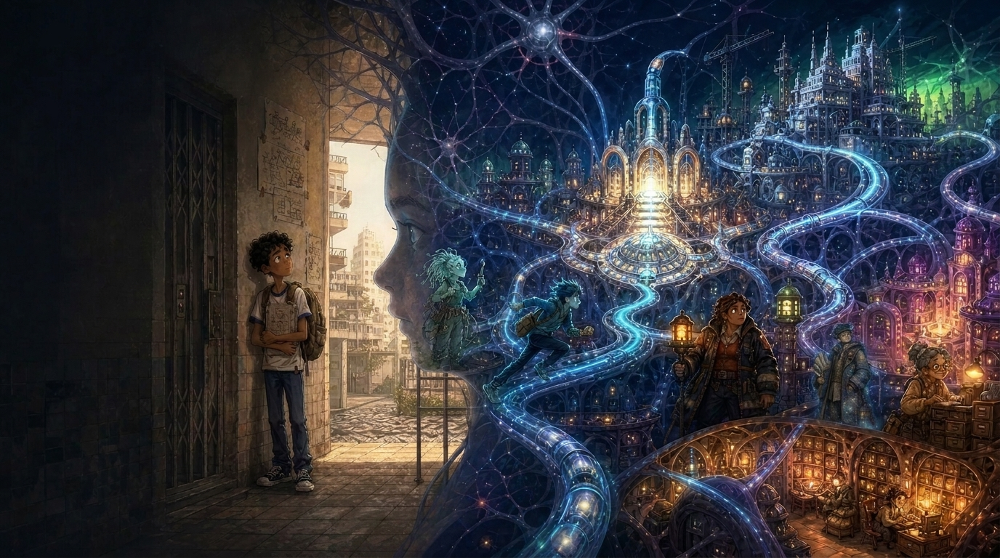
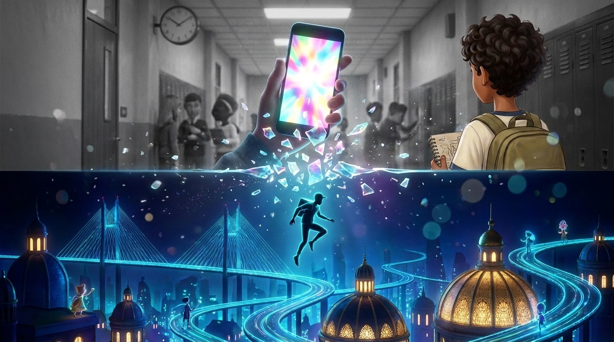
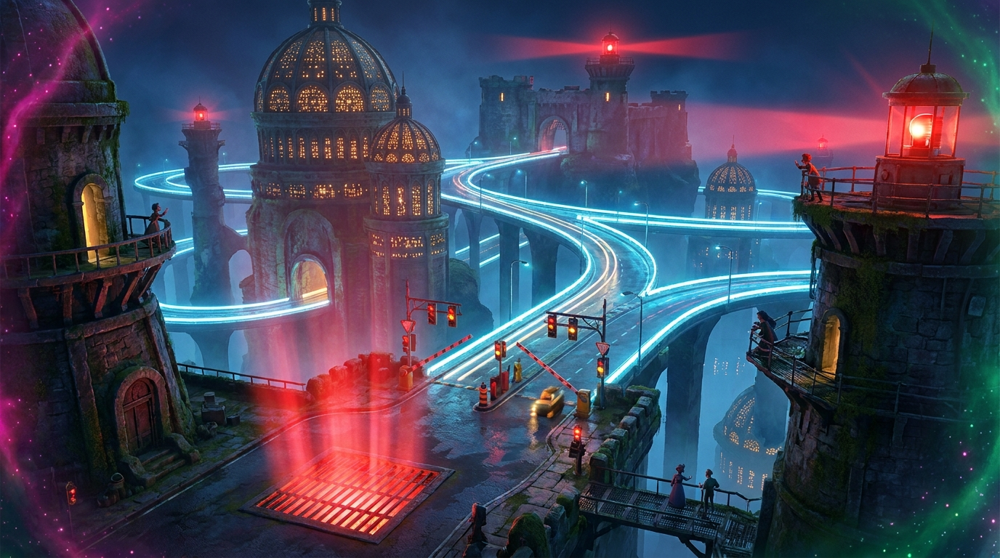
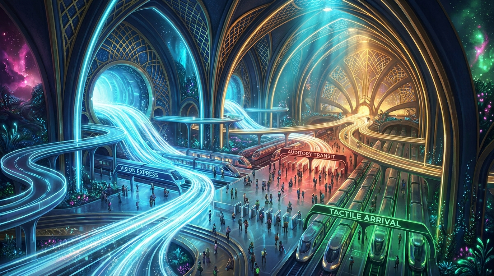
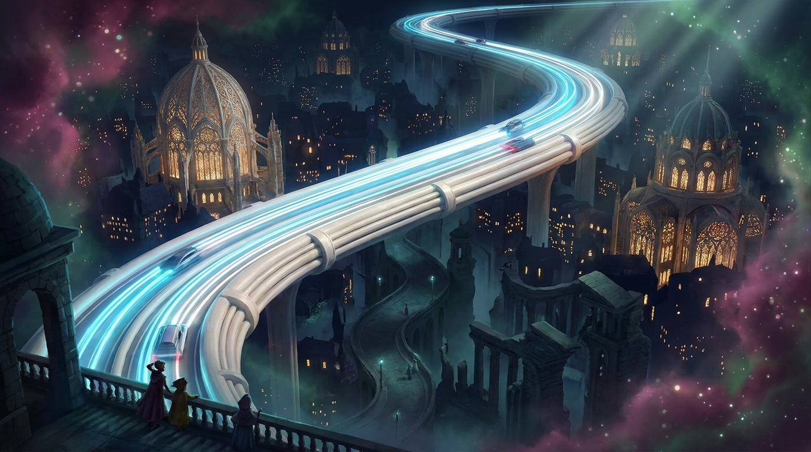
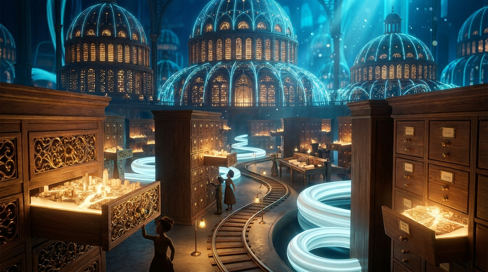
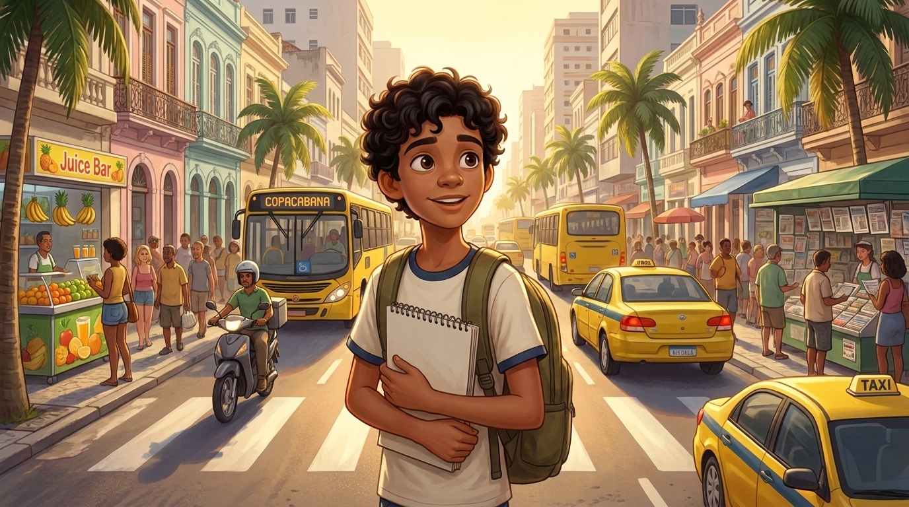
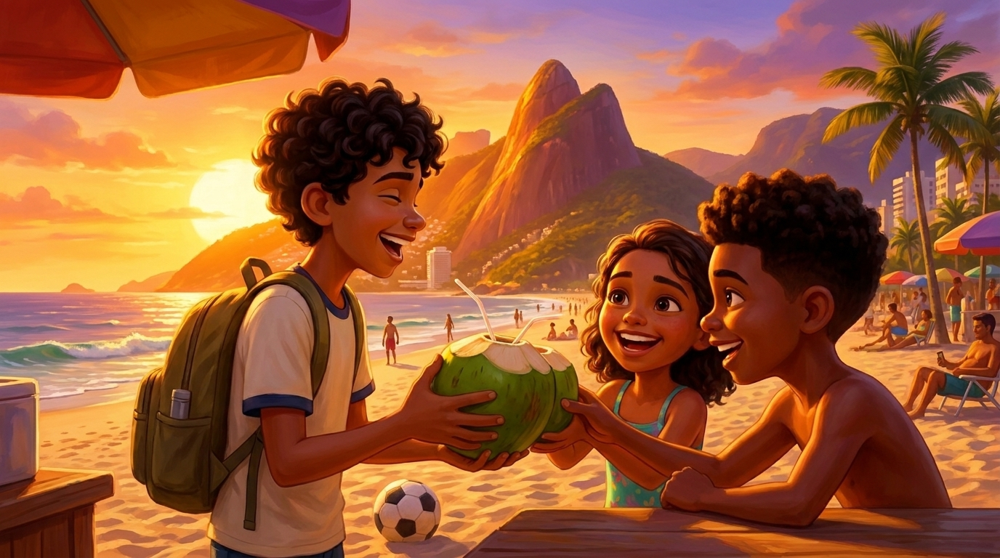

Direção de produção
Personagens de leitura 2D autoral, com acting e silhueta claros. A cidade pode usar base 3D, câmera, escala e parallax, mas a superfície final precisa parecer desenhada, pintada e viva - nunca plástico de prateleira.
Ciano é impulso elétrico; branco-osso é mielina; âmbar é antecipação; dourado é contentamento; verde-ácido é a Névoa do Cortisol; vermelho é farol de alerta, não sangue.
O som funciona como segunda legenda invisível: timbre é anatomia, silêncio é inibição, e a música de Léo amarra mapas, Méier, Pedro, pai e roda sem virar explicação.
Título público: Córtex City: a Cidade que Esquece. O subtítulo só funciona se aparecer com estrada, obra ou uso/desuso, para não parecer “memória apagada” genérica.
O pacote inclui sizzle de 90 segundos, três cenas de audição, dois roteiros plenos e um pitch deck de 13 slides. A próxima prova externa ideal é teaser/animatic curto ou cena-piloto de 3 a 5 minutos.
Rigor e cuidado
Sem “química boa contra química má”; sem hemisfério lógico vs. criativo; sem força de vontade como bateria; sem poda como dano; sem período crítico como sentença; sem emoção como vilã.
Ferramentas da Cidade: gestos pequenos e filmáveis que Léo faz no mundo real - reduzir carga, praticar, dormir, reparar, focar. A ferramenta ajuda; não cura.
Todo roteiro, sizzle ou cena nova passa pela régua R1/R2/R3: sem jargão diegético, sem vilania biológica, sem determinismo como desculpa. Entender a causa só vale se abrir caminho para reparação concreta.
Fôlego de franquia
A venda deve liderar com T1-T2, porque esse é o núcleo tween real. As temporadas futuras provam fôlego de mundo, não são a tese principal de compra. A série não precisa prometer oito temporadas para ser vendável, mas já sabe para onde poderia ir.
Léo aos 13. A cafeína atravessa a Barreira Hematoencefálica e cobra custo físico; Bia entra pela percepção, por Amy, Inês e Otto. A pergunta muda: quem a cidade deixa entrar?
A T2 já mostra que “lá em cima” não tem um chefe único: Spike rastreia a resposta e encontra cem mãos, não um remetente. Se a série parar em T2, o coração filosófico não fica hipotecado.
Querer mais nem sempre é gostar mais: telas, recompensa, risco e Dopa.
Primeira paixão, ciúme, vergonha, limites e leitura corporal.
Corpo Caloso e integração, sem mito de hemisfério lógico vs. criativo.
Memória profunda, narrativa do eu, dívidas, períodos críticos e governo sem chefe interno.
IP e rota comercial
A estratégia consolidada não é vender diretamente para um grande streamer. É proteger a IP, montar um pacote curto, aproximar uma produtora brasileira independente e negociar uma opção/licença autoral compatível com papel passivo de criador/licenciante.
Registrar/depositar bíblia, roteiros, personagens, textos e artes essenciais, com a Biblioteca Nacional como caminho brasileiro de prova de anterioridade. A ideia abstrata não basta; a expressão concreta é o ativo.
One-pager, deck, bíblia polida, roteiro piloto, arte conceitual, sizzle e term sheet de uma página.
Buscar produtoras brasileiras com histórico em animação, ciência, infância/tween e capacidade de fomento/canal.
Preferir opção remunerada de desenvolvimento, licença/cessão patrimonial limitada, reversão por inatividade, créditos e royalties autorais.
Se a parceria for avançar, definir por escrito se ele será coautor, parceiro comercial, consultor, agente de aproximação ou outra função. Cada rótulo muda direitos, deveres e remuneração.
Estado editorial
O material foi lido por lentes diferentes: roteiro, temporada, ciência, pedagogia, compra, continuidade e comédia. O resultado corrigiu contradições reais entre documentos e deixou decisões importantes registradas no Master Plan.
A T1 foi revista pela pergunta que interessa para essa faixa: a criança entende, acompanha e quer ver o próximo? O achado central foi simples: o finale honesto funciona, e o primeiro terço precisava puxar melhor, especialmente o Ep. 2.
A hipótese “talvez seja melhor para adultos” foi testada e rejeitada. A leitura consolidada é tween/família: 10-13 no núcleo, família em volta, adulto como teto conquistado de co-viewing.
Essas revisões são ferramentas internas de desenvolvimento, não prova externa de audiência. Quando houver animatic ou leitura dramatizada, o próximo degrau é testar com crianças reais de 10-13.
Acesso aos materiais
O HTML deve bastar para entender a série. Os links abaixo dão acesso ao material completo para leitura profunda, registro, pitch e negociação.
Leitura recomendada para o amigo
Ele dá a visão completa sem obrigar a atravessar todos os documentos de sala.
Se a premissa interessar, os próximos materiais são a Pitch Bible final e o roteiro piloto de 22 minutos, ambos linkados na seção de documentos.
Antes de falar em registro conjunto ou depósito na Biblioteca Nacional, entenda a diferença entre coautoria, parceria comercial e ajuda na venda.
Antes de discutir titularidade, vale responder uma coisa mais simples: você quer entrar como leitor estratégico e ponte comercial, ou como parceiro criativo com participação formal? A primeira opção pode ser simples. A segunda precisa ser definida com cuidado, porque altera a propriedade intelectual desde a origem.